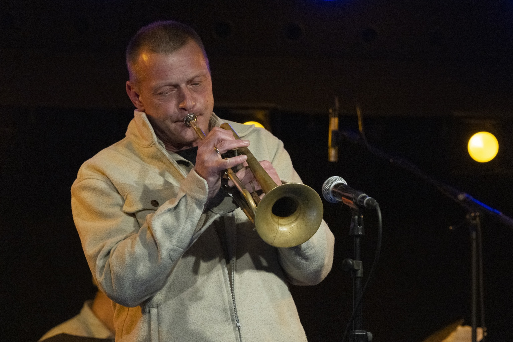
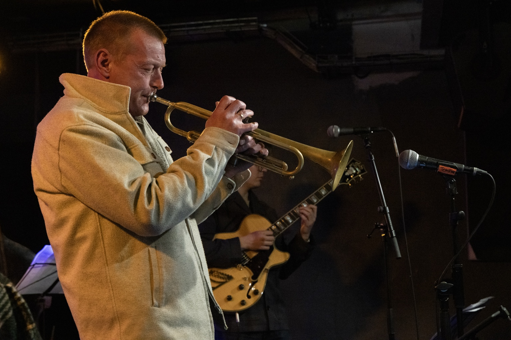

Different Season
2026
TRUMPETER · COMPOSER · EDUCATOR
Sound, silence, movement and lyricism.
Thomas Fryland is a Danish trumpet soloist, composer, arranger and educator working across jazz, improvisation, Nordic atmosphere and lyrical expression.
His artistic work moves between lyrical melody, open form, deep jazz tradition and contemporary sound worlds.


Conservatory teaching, masterclasses, improvisation, ensemble playing, composition and artistic mentoring.
Booking and artistic inquiries
thomasfryland@gmail.com